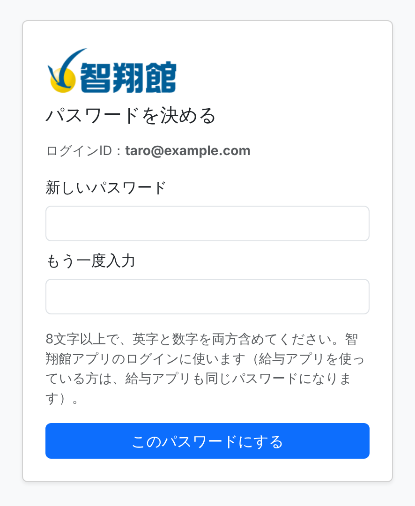
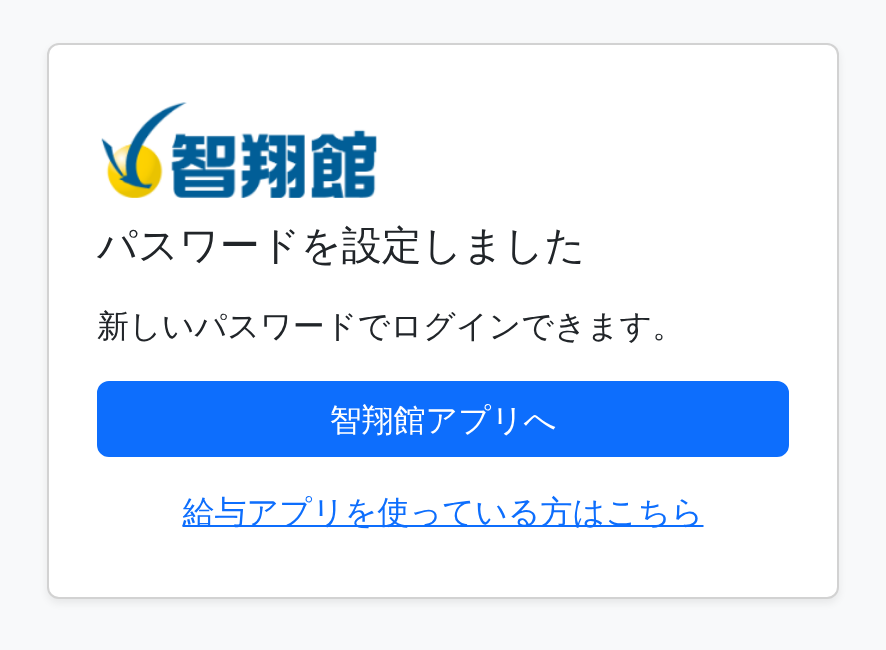
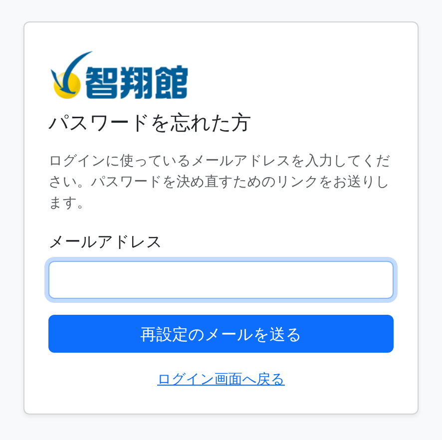
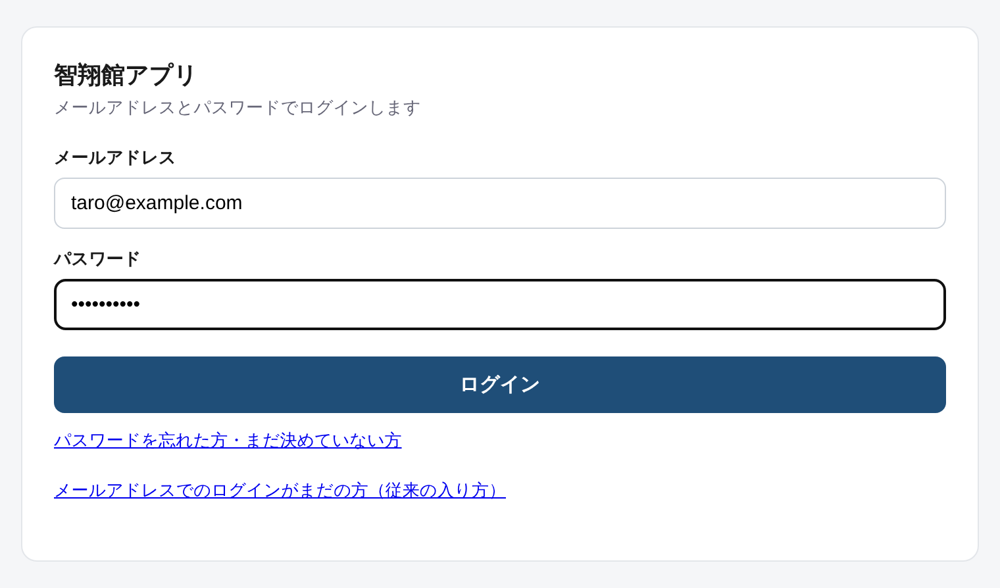
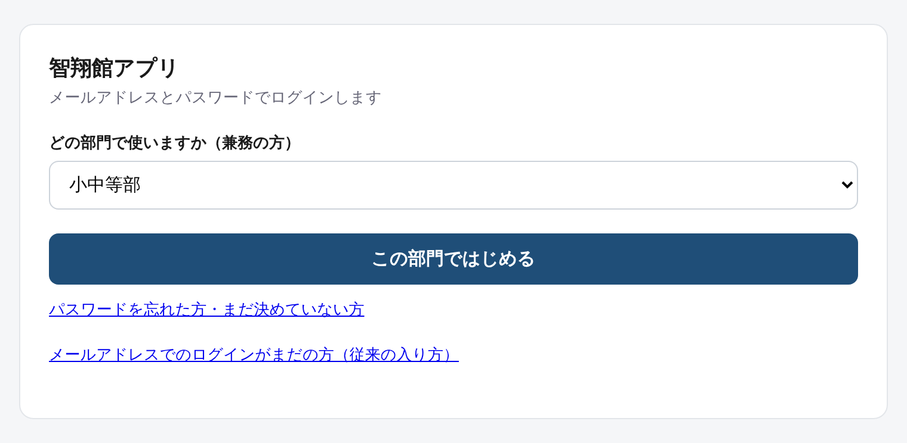
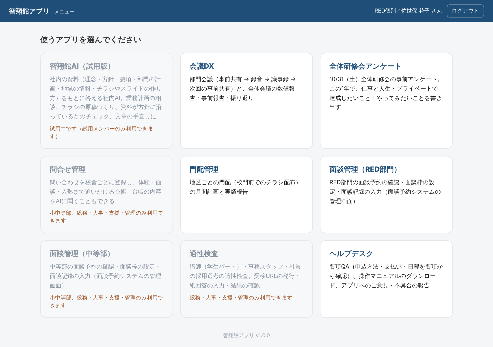
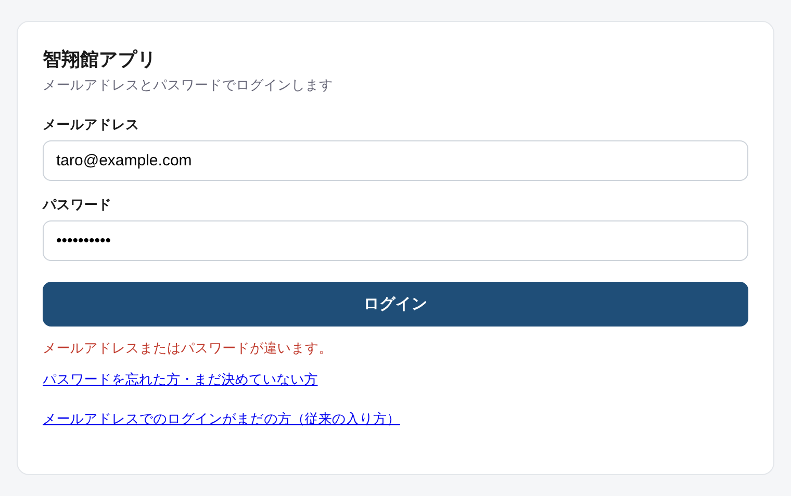

株式会社智翔館 社内向け
智翔館アプリ
ログイン 利用マニュアル
智翔館アプリは、メールアドレスとパスワードでログインするようになりました。このマニュアルでは、はじめにパスワードを決める手順と、新しいログインのしかたをまとめています。
- 対象
- 智翔館アプリを使う社員（給与アプリを使わない方）
- アプリ
- 智翔館アプリ v1.0.0
- 最新版
- 智翔館アプリのヘルプデスク「マニュアル」タブからダウンロードできます
- 作成
- 2026年11月
※ 写真に写っている氏名・メールアドレスは、説明のために用意した架空の例です。給与アプリ（給与・シフト、講師育成）も使う方は「共通ログイン 利用マニュアル（給与アプリを使う方向け）」をご覧ください。
- ログインのしかたが変わります。これまでの「事業部とお名前を選ぶ」入り方から、メールアドレスとパスワードで入る形になります。
- パスワードはご自身で決めます。管理者から届くメールのリンクを開いて決めます（第2章）。
- 使えるアプリは変わりません。ログインしたあとのメニューや、会議DXなどの使い方はこれまでと同じです。
移行期間について
切り替えてから約2週間は、ログイン画面の下の「メールアドレスでのログインがまだの方（従来の入り方）」から、これまでどおり事業部とお名前を選んで入ることもできます。移行期間が終わる日はあらためてお知らせします。それまでに、メールアドレスでログインできることを確かめておいてください。
2-1「パスワードの設定のお願い」のメールが届いたら
管理者から、次のようなメールが届きます。
件名：【智翔館】ログイン用パスワードの設定のお願い
智翔 太郎 様
智翔館アプリは、メールアドレスとパスワードでログインするようになりました。
下のリンクを開いて、ご自身でパスワードを決めてください。
パスワードを決める: https://chishokan.co.jp/colorhrm/password_setup.php?token=……
（このリンクは7日有効で、一度だけ使えます）
ログインID（メールアドレス）: taro@example.com
※ リンクの行き先は、会社のホームページ（chishokan.co.jp）の中にある、パスワードを決める画面です。
メールの「パスワードを決める」のリンクを開きます。
「新しいパスワード」と「もう一度入力」に、同じパスワードを入れます。8文字以上で、英字と数字を両方含めてください。メールアドレスと同じものは使えません。
このパスワードにするを押します。「パスワードを設定しました」と出たら完了です。智翔館アプリへを押すと、ログイン画面に進めます。

図1 パスワードを決める画面

図2 設定が済んだ画面
ポイント
リンクは7日間・一度だけ使えます。設定が済んだ画面の下にある「給与アプリを使っている方はこちら」は、押さなくてかまいません。
2-2メールが届いていない・リンクの期限が切れた・パスワードを忘れた
自分で再設定のメールを頼めます。
智翔館アプリのログイン画面で「パスワードを忘れた方・まだ決めていない方」を押します。
ログインに使うメールアドレスを入れて再設定のメールを送るを押します。
届いたメールのリンクを開き、2-1 と同じ手順でパスワードを決めます。このリンクは2時間有効です。

図3 パスワードを忘れた方の画面
メールが届かないとき
数分たっても届かないときは、迷惑メールのフォルダを確かめてください。それでも届かないときは、登録されているメールアドレスが違う可能性があります。管理者にお問い合わせください。
3-1メールアドレスとパスワードでログインする
智翔館アプリ（https://meeting-support.vercel.app）を開きます。ログイン画面が出ます。
メールアドレスとパスワードを入れて、ログインを押します。

図4 智翔館アプリのログイン画面
ポイント
一度ログインすると、同じ端末・同じブラウザでは12時間ログインしたままになります。共用のパソコンでは、使い終わったら右上のログアウトを押してください。
3-2兼務の人は部門を選ぶ
複数の部門を兼務している人は、ログインのあとに「どの部門で使いますか」と出ます。使う部門を選んでこの部門ではじめるを押してください。会議DXなどは、ここで選んだ部門の内容になります。別の部門で使うときは、いったんログアウトして選び直します。

図5 兼務の人が部門を選ぶ画面
3-3メニュー画面
ログインすると、これまでと同じメニューが開きます。右上に、部門とお名前が出ていることを確かめてください。

図6 メニュー画面
| 画面に出る表示・状況 | どうすればよいか |
|---|
| メールアドレスまたはパスワードが違います。 | 入力を確かめてください（全角・半角、大文字・小文字、前後の空白）。分からなければ「パスワードを忘れた方・まだ決めていない方」から決め直します（2-2）。 |
| ログインの失敗が続いたため、しばらくログインできません。 | 15分の間に10回まちがえると、しばらく止まります。15分ほど待つか、パスワードを決め直すとすぐに入れます。 |
| 所属部門が登録されていません。 | 名簿に部門が入っていません。管理者にお問い合わせください。 |
| このアカウントは無効になっています。 | 管理者にお問い合わせください。 |
| このリンクは使えません（パスワード設定） | 期限切れか、すでに使ったリンクです。2-2 の手順で再設定のメールを頼み直してください。 |
| 再設定のメールが届かない | 迷惑メールのフォルダを確かめてください。届かなければ、登録のメールアドレスが違う可能性があります。管理者にお問い合わせください。 |

図7 パスワードが違うとき
パスワードを安全に使うために
- パスワードは誰にも教えないでください。管理者がパスワードをお尋ねすることはありません。
- メモやメールに書き残さないでください。ブラウザに保存するのは、自分だけが使う端末にしてください。
- ほかのサービスと同じパスワードは使わないでください。
ご不明な点や不具合は、ヘルプデスクの「ご意見・不具合の報告」からお知らせください。